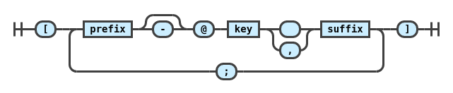
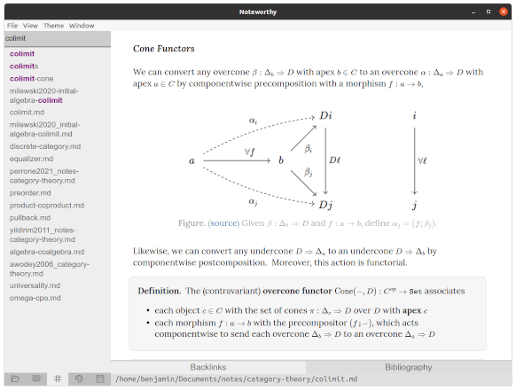
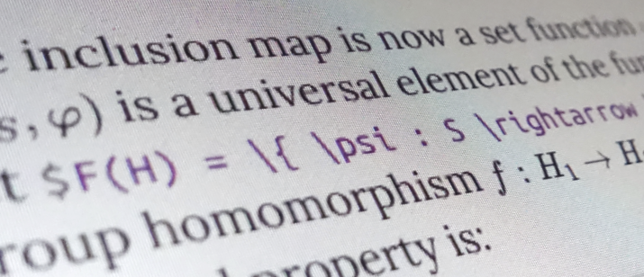

Benjamin R. Bray
I work as a research software engineer for Hasuo Lab at the National Institute of Informatics in Tokyo, where I build software aimed at making formal methods more accessible to engineers working in industry.
These days, I’m most interested in working on:
- Language servers, static analyzers, and compilers.
- Interactive editors for composing rich text documents.
- Numerical methods for graphics and simulation.
I most often reach for TypeScript, Haskell, or Scala when starting a new project. Recently I’ve also been exploring Rust.
In my free time, I enjoy cycling, goats, dodgeball, long walks, and baking. Maybe one day I’ll make more games! If you’d like to chat, feel free to write me at benrbray@gmail.com.
{kind=link}
{kind=link}
{kind=link}
Selected Projects
A collection of reference implementations of type inference algorithms, with particular emphasis on features which are necessary for practical implementations, such as error reporting.
A command line tool to help organize my own music library, written in Haskell. Helps the user fill in missing music metadata by querying Discogs and MusicBrainz for matching tracks.
A collection of plugins for the
remark markdown processor adding support for pandoc-style inline citation syntax and bibliography formatting. 
An open-source Markdown editor with bidirectional links and excellent math support!


As an undergraduate research assistant, I spent three years as the primary developer for an NLP-driven web application built to assist a humanities professor with research on 19th-century German literature.
I used linear algebra to give my high school robotics team a competitive edge! Since robots compete in teams of three, an individual's contribution to the final score cannot be known. By scraping public match data and solving a linear system, I estimated an offensive power rating for each robot, which my team used to predict match outcomes and choose alliances.

In high school, my curiosity about game development led me to Newgrounds, where I made lifelong friends and published a few Flash games along the way!